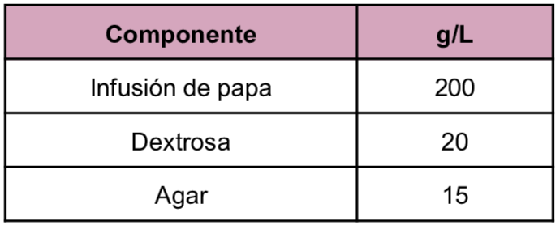
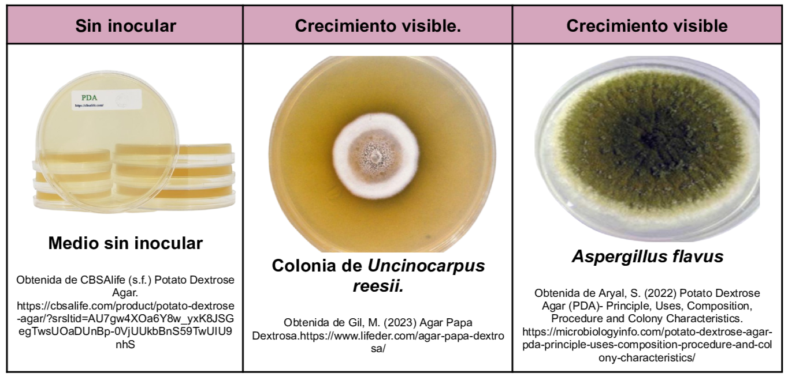

Medio utilizado para el cultivo y recuento de hongos y bacterias en muestras alimenticias y farmacéuticas. En la composición la infusión de papa y la dextrosa promueven el crecimiento fúngico.
Composición
Medio utilizado para el cultivo y recuento de hongos y bacterias en muestras alimenticias y farmacéuticas. En la composición la infusión de papa y la dextrosa promueven el crecimiento fúngico.
Composición

pH a 25°C 5.6±0.2
Resultados Posibles

Gil, M. (2023) Agar Papa Dextrosa.https://www.lifeder.com/agar-papa-dextrosa/
MCD Lab (2025) Agar Dextrosa y Papa (FEUM, USP,EP,JP). https://mcd.com.mx/index.php?controller=attachment&id_attachment=26711